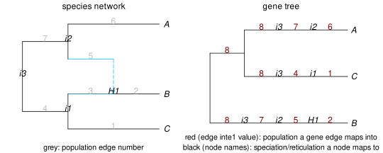

mapping gene trees into the species phylogeny
Nodes in gene trees can be mapped to a node or an edge in the species phylogeny. Edges in gene trees can be mapped to an edge in the species phylogeny. Attributes of nodes and edges are used to carry this mapping information, as detailed in the documentation of function simulatecoalescent.
We give examples below of how we may use this mapping information.
naming internal nodes
First, it's useful to name internal nodes in the network, to which we can later map nodes in the gene tree.
julia> net = readnewick("((C:0.9,(B:0.2)#H1:0.7::0.6):0.6,(#H1:0.6,A:1):0.5);");julia> nameinternalnodes!(net); # default prefix "i" to name internal nodesjulia> writenewick(net)"((C:0.9,(B:0.2)#H1:0.7::0.6)i1:0.6,(#H1:0.6::0.4,A:1.0)i2:0.5)i3;"
Notice the extra node names in the species phylogeny: i1, i2, and i3 at the root.
Next, we use the option nodemapping=true when simulating gene trees, to ask for extra degree-2 nodes in gene trees. These nodes are created each time that a gene tree lineage crosses a node in the species phylogeny, that is, each time that a gene tree lineage crosses a speciation node or a hybridization node. We'll simulate a single tree here each time.
julia> using StableRNGs; rng = StableRNG(7); # to replicate randomness, but default RNG is betterjulia> tree_regular = simulatecoalescent(rng, net,1,1)[1];julia> writenewick(tree_regular, round=true) # regular nodes only"(B:2.474,(C:1.695,A:1.695):0.979);"julia> rng = StableRNG(7); # to replicate the same coalescent simulationjulia> tree = simulatecoalescent(rng, net,1,1; nodemapping=true)[1];julia> writenewick(tree, round=true) # extra degree-2 nodes for mapping"((((B:0.2)H1:0.6)i2:0.5)i3:1.174,(((C:0.9)i1:0.6)i3:0.195,((A:1.0)i2:0.5)i3:0.195):0.979);"
Notice that regular nodes in the gene tree (nodes that we get without the nodemapping option) don't have names. With the nodemapping option, there are many new nodes, all of degree-2, named after internal nodes in the network (i1, i2, i3). These extra degree-2 nodes and their names are sufficient to map the gene tree into the species network.
The network is shown on the left below, with edges annotated by their numbers.
plot(net, showedgenumber=true, shownodelabel=true, tipoffset=0.1);
plot(tree, edgelabel=DataFrame(number=[e.number for e in tree.edge],
label=[e.inte1 for e in tree.edge]),
edgelabelcolor="red4", shownodelabel=true, tipoffset=0.1);
In the gene tree (right), each lineage is annotated by the network edge it maps into. Degree-2 nodes appear via their names, such that each horizontal line represents a series of gene lineages, separated from each other by degree-2 nodes. For example, the horizontal line tracing B's ancestry back in time maps into the network like this:
- from B, go back along edge 2
- meet hybrid node H1, was inherited from the minor hybrid edge 5,
- from speciation node i2, trace back along edge 7,
- meet the network's root node i3, trace back along the network's root edge 8 before coalescing with the ancestor of the other lineages (which have already coalesced by then).
mapping gene tree edges back into species edges
When the nodemapping argument is used, the mapping of a gene tree within a species phylogeny is fully contained within the newick string of the gene tree. This mapping is encoded with the degree-2 node names as mentioned above. Gene trees from simulatecoalescent also store the mapping for species edges in the inte1 field of gene tree edges. This information is 'lost' when a gene tree is written in newick format. However, we can re-encode this information with gene_edgemapping!. We can see an example of re-encoding using the gene tree and network from above. Let's focus, for example, on the edge that the hybrid lineage inherited from, whose child node has name "H1"
julia> e_index = findfirst(e -> getchild(e).name == "H1", tree.edge)3julia> e = tree.edge[e_index]PhyloNetworks.EdgeT{PhyloNetworks.Node}: number:3 length:0.6 attached to 2 node(s) (parent first): 6 3julia> population_mappedto(e) # edge 'e' evolved within edge 5 in the species network5
Next we write our gene tree and read it back from the newick string, see that the mapping of edges was "lost", and how to recover it using gene_edgemapping!:
julia> tree_newick = writeTopology(tree)"((((B:0.2)H1:0.6)i2:0.5)i3:1.1743591500426886,(((C:0.9)i1:0.6)i3:0.19502681753734125,((A:1.0)i2:0.5)i3:0.19502681753734125):0.9793323325053473);"julia> tree = readTopology(tree_newick); # read the tree back from the newick string # next: find the edge above H1, as beforejulia> e_index = findfirst(e -> getchild(e).name == "H1", tree.edge) # may have changed2julia> e = tree.edge[e_index]PhyloNetworks.EdgeT{PhyloNetworks.Node}: number:2 length:0.6 attached to 2 node(s) (parent first): 3 2julia> population_mappedto(e) # nothing: edge mapping was "lost"julia> gene_edgemapping!(tree, net)julia> population_mappedto(e) # edge 5 in the species network: the mapping was recovered5
cleaning gene trees
Almost all examples below use this mapping information via the extra degree-2 nodes and the extra edges between these nodes.
But we may want to "clean" gene trees of their degree-2 nodes at some point. This can be done with the PhyloNetworks utility removedegree2nodes!, like this:
julia> removedegree2nodes!(tree, true)PhyloNetworks.HybridNetwork, Rooted Network 4 edges 5 nodes: 3 tips, 0 hybrid nodes, 2 internal tree nodes. tip labels: B, C, A ((C:1.695,A:1.695):0.979,B:2.474);
The option true is to keep the root, even if it's of degree 2.